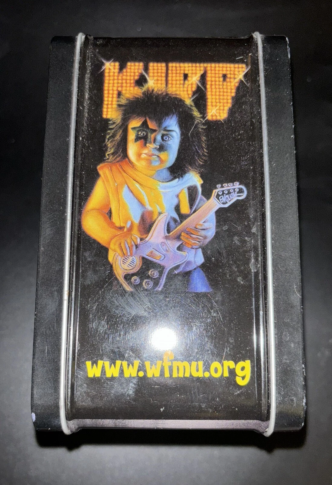

Provenance
Private collection.
Literature
Ron English, Popaganda: The Art & Subversion of Ron English (San Francisco: Last Gasp, 2001), p. 86. ISBN 1-887128-60-3.

Ron English, Son of Pop: Ron English Paints His Progeny (San Francisco, California: 9mm Books and The Shooting Gallery, 2007), p. 56. ISBN 978-0-9766325-1-1.

Milk Magazine, December 8, 2008.

Notes
In Popaganda and Son of Pop, this work was erroneously reported as 18 × 10 inches.
This painting references Paul Stanley of the band KISS in his signature makeup.
This image was also used on a WFMU 91.1 NJ metal lunchbox documented in a later secondary marketplace listing.
Ancillary Documentation

Selected Online Circulation
Selected examples of the work’s online circulation, reproduction, or discussion. This list is not exhaustive; it is intended to document representative appearances of the image beyond formal publication records.